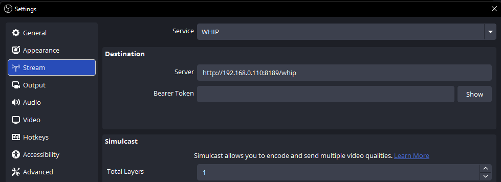
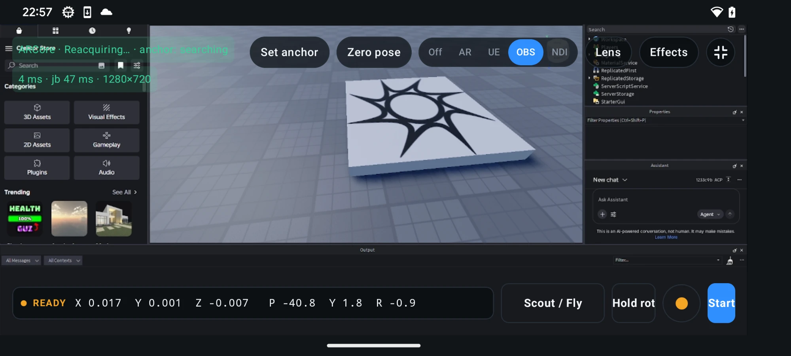
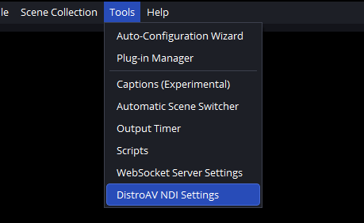
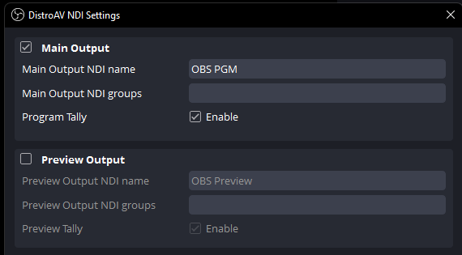
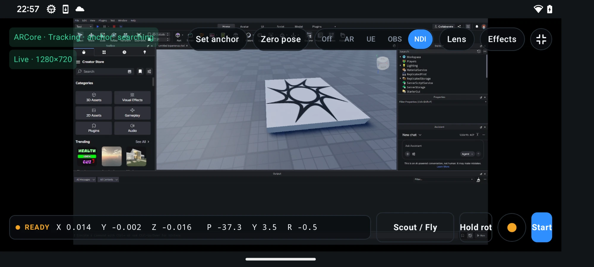
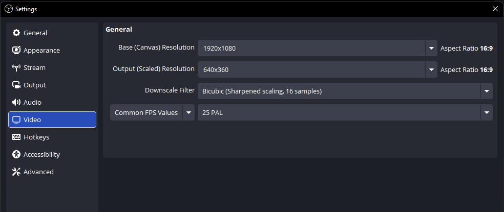

What you need
- An Android phone running 6DoF Camera Tracker.
- A computer running OBS Studio.
- The phone and computer connected to the same Wi-Fi or wired local network.
- For the NDI option only: a compatible version of the DistroAV plugin and NDI runtime.
OBS sends its program picture to the phone. Camera position, rotation, and lens values still use a separate FreeD, OSC, or WebSocket connection when your production needs tracking data.
Choose WHIP or NDI
| Option | Best for | Trade-off |
|---|---|---|
| WHIP | The simplest setup. OBS supports it directly, so no additional plugin is required. | Usually a little more latency than NDI, but decoding is hardware accelerated on supported phones. |
| NDI | A responsive local-network preview when low latency is the priority. | Requires DistroAV and uses noticeably more phone CPU and battery. |
Start with WHIP unless your workflow needs the lower latency of NDI or already uses NDI across the production network.
Prepare the phone
- Open Settings → View / Preview Input in 6DoF Camera Tracker.
- Enable OBS / WHIP, NDI, or both, depending on the return-video methods you want to use.
- For WHIP, keep the default listen port 8189 unless it conflicts with another service.
- For NDI, use Refresh sources after the OBS output has been enabled.
- Return to the tracker and select OBS for WHIP or NDI for the DistroAV connection.

Option 1: Connect with WHIP
- On the phone, select the OBS viewfinder mode. The status should say that it is listening and waiting for OBS.
- Build the Server URL from the phone's local IP address and the Listen port shown under Settings → View / Preview Input. It follows the format
http://PHONE_IP:8189/whip. - In OBS, open Settings → Stream and choose WHIP as the service.
- Paste the phone's address into Server and leave Bearer Token blank.
- Select Apply, close Settings, and choose Start Streaming.

OBS now publishes its program output directly to the phone. The stream stops when you choose Stop Streaming in OBS or leave OBS mode in the app.

For the current OBS controls and platform notes, see the official OBS WHIP streaming guide.
Option 2: Connect with DistroAV NDI
- Install the current DistroAV release that matches your OBS version, including the required NDI runtime, then restart OBS.
- In the OBS main menu, open Tools → DistroAV NDI Settings.
- Tick the checkbox beside Main Output and give it a recognisable NDI name, such as
OBS PGM. - On the phone, open Settings → View / Preview Input and select Refresh sources.
- Choose the named OBS source, return to the tracker, and select the NDI viewfinder mode.


DistroAV publishes the OBS program output while Main Output is enabled; the normal OBS Start Streaming button is not required for this local NDI path.

Learn more at ndi.video. NDI® is a registered trademark of Vizrt NDI AB.
Reduce preview lag
A smaller video frame and a lower frame rate reduce the amount of data OBS must encode, send across the network, and decode on the phone. This can make either WHIP or NDI feel more responsive, especially on busy Wi-Fi or less powerful phones.
- In OBS, open Settings → Video.
- Keep Base (Canvas) Resolution at the size needed for your OBS composition.
- Lower Output (Scaled) Resolution. 640 × 360 is a practical starting point for a phone viewfinder.
- Set Common FPS Values to 25 or 30, then apply the settings and test the response on the phone.
Lower settings use less bandwidth and processing power, but fine details become harder to judge and fast motion looks less smooth. Increase the resolution or frame rate only as far as the phone and network can handle reliably.

Verify the viewfinder
- Switch between two OBS scenes and confirm the phone follows the program output.
- Move graphics or a camera source and check that frames continue updating smoothly.
- Start camera tracking and confirm the chosen FreeD, OSC, or WebSocket output continues independently of the OBS preview.
- Lock the phone screen orientation you plan to use before the production starts.
Troubleshooting
| Symptom | Check |
|---|---|
| WHIP stays on “waiting for OBS” | Confirm OBS is streaming, the Server URL matches the phone exactly, the bearer token is blank, and both devices are on the same network. |
| OBS cannot connect to the WHIP URL | Select OBS mode on the phone first, confirm port 8189 is available, and allow OBS through the computer's private-network firewall. |
| No NDI sources appear | Enable DistroAV Main Output, select Refresh sources, keep both devices on the same subnet, and allow multicast or mDNS traffic on the network. |
| NDI source appears but has no picture | Confirm the selected source name matches the active OBS Main Output and that DistroAV loaded successfully after OBS restarted. |
| Tracking becomes less stable in NDI mode | Use WHIP, reduce the OBS output resolution or frame rate, or move NDI decoding to a more powerful phone. |